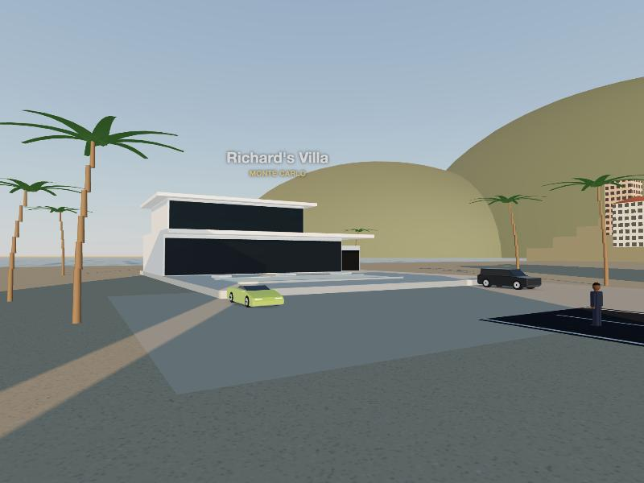
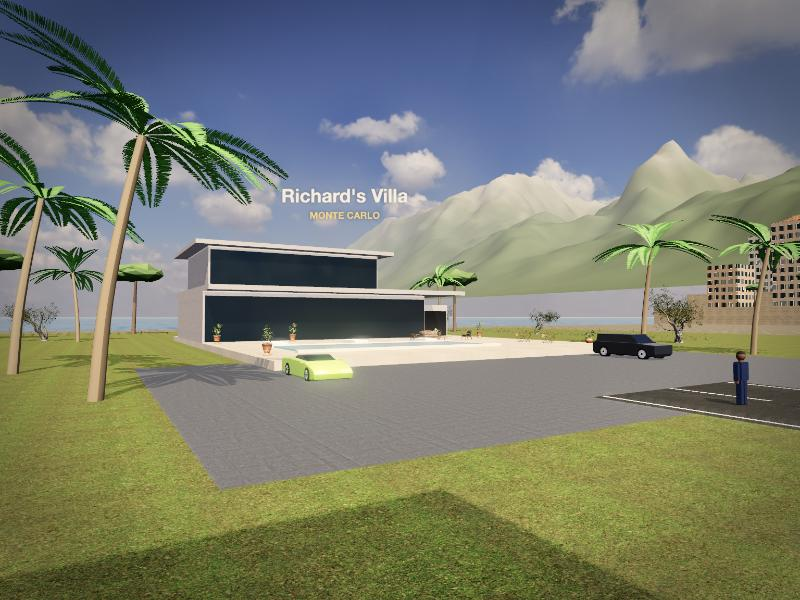
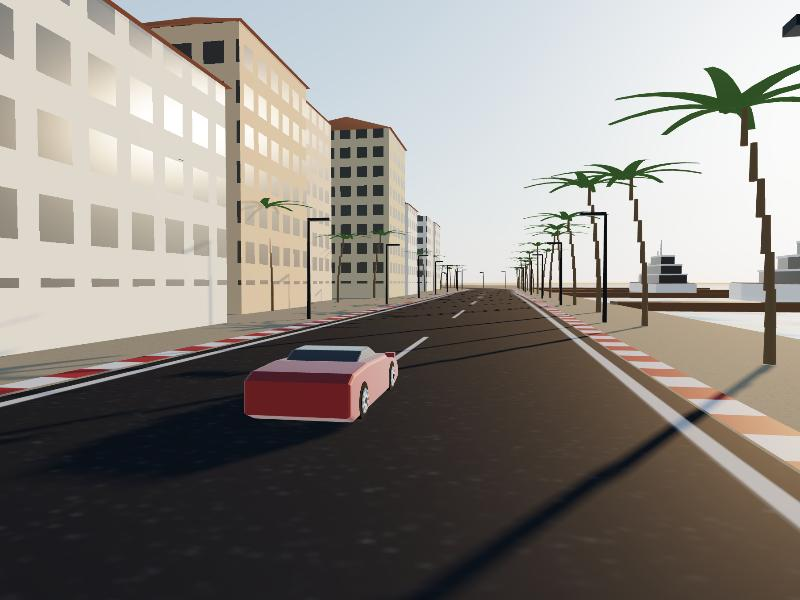
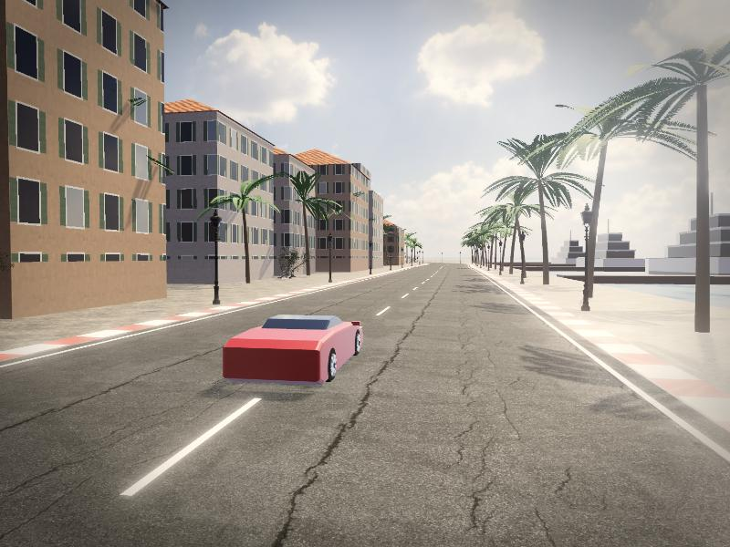
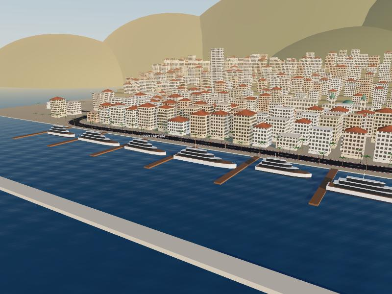
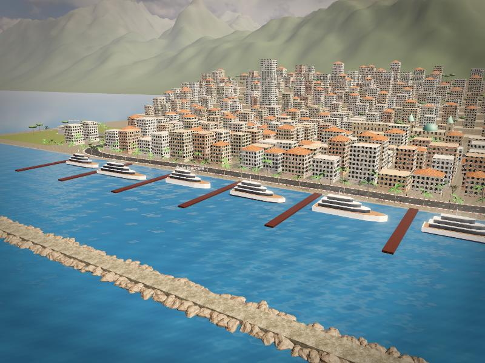

The Dream Life · graphics pass 1
Before and after
Same three camera positions. Changed: real HDR sky and lighting, photo-scanned materials, real trees and lamps, mountains, film-style post-processing. Not yet changed: the cars and the character are still placeholders.
Your villa, Monte Carlo


Harbour road


Port Hercule from the air

